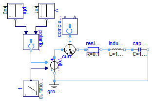
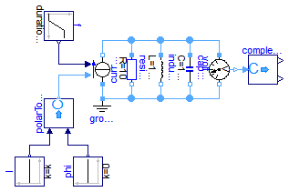
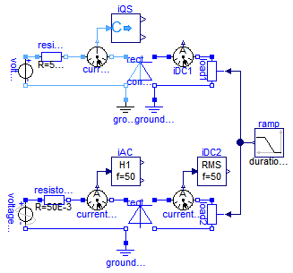

Extends from Modelica.Icons.ExamplesPackage (Icon for packages containing runnable examples).
| Name | Description |
|---|---|
| Series resonance circuit | |
| Parallel resonance circuit | |
| Rectifier example |
 Modelica.Electrical.QuasiStationary.SinglePhase.Examples.SeriesResonance
Modelica.Electrical.QuasiStationary.SinglePhase.Examples.SeriesResonance
The frequency of the voltage source is varied by a ramp. Plot length and angle of the current phasor, i.e., complexToPolar.len and .phi, versis time resp. frequency.
Extends from Modelica.Icons.Example (Icon for runnable examples).
model SeriesResonance "Series resonance circuit" extends Modelica.Icons.Example;Modelica.Blocks.Sources.Constant V(k=1); Modelica.Blocks.Sources.Constant phi(k=0); Modelica.Blocks.Sources.Ramp f( height=2, duration=1, offset=1e-6); QuasiStationary.SinglePhase.Sources.VariableVoltageSource voltageSource; QuasiStationary.SinglePhase.Basic.Ground ground; QuasiStationary.SinglePhase.Basic.Resistor resistor(R_ref=0.1); QuasiStationary.SinglePhase.Basic.Inductor inductor(L=1/(2*Modelica.Constants.pi)); QuasiStationary.SinglePhase.Basic.Capacitor capacitor(C=1/(2*Modelica.Constants.pi)); QuasiStationary.SinglePhase.Sensors.CurrentSensor currentSensor; Modelica.ComplexBlocks.ComplexMath.PolarToComplex polarToComplex; Modelica.ComplexBlocks.ComplexMath.ComplexToPolar complexToPolar; equationconnect(f.y, voltageSource.f); connect(polarToComplex.y, voltageSource.V); connect(ground.pin, voltageSource.pin_n); connect(voltageSource.pin_p, currentSensor.pin_p); connect(currentSensor.pin_n, resistor.pin_p); connect(resistor.pin_n, inductor.pin_p); connect(inductor.pin_n, capacitor.pin_p); connect(capacitor.pin_n, ground.pin); connect(phi.y, polarToComplex.phi); connect(V.y, polarToComplex.len); connect(currentSensor.y, complexToPolar.u); end SeriesResonance;
Modelica.Electrical.QuasiStationary.SinglePhase.Examples.ParallelResonance
The frequency of the current source is varied by a ramp. Plot length and angle of the voltage phasor, i.e., complexToPolar.len and .phi, versis time resp. frequency.
Extends from Modelica.Icons.Example (Icon for runnable examples).
model ParallelResonance "Parallel resonance circuit" extends Modelica.Icons.Example;Modelica.Blocks.Sources.Constant I; Modelica.Blocks.Sources.Constant phi(k=0); Modelica.Blocks.Sources.Ramp f( height=2, duration=1, offset=1e-6); QuasiStationary.SinglePhase.Sources.VariableCurrentSource currentSource; QuasiStationary.SinglePhase.Basic.Ground ground; QuasiStationary.SinglePhase.Basic.Resistor resistor(R_ref=10); QuasiStationary.SinglePhase.Basic.Inductor inductor(L=1/(2*Modelica.Constants.pi)); QuasiStationary.SinglePhase.Basic.Capacitor capacitor(C=1/(2*Modelica.Constants.pi)); QuasiStationary.SinglePhase.Sensors.VoltageSensor voltageSensor; Modelica.ComplexBlocks.ComplexMath.PolarToComplex polarToComplex; Modelica.ComplexBlocks.ComplexMath.ComplexToPolar complexToPolar; equationconnect(currentSource.pin_n, resistor.pin_p); connect(currentSource.pin_n, inductor.pin_p); connect(currentSource.pin_n, capacitor.pin_p); connect(currentSource.pin_n, voltageSensor.pin_p); connect(currentSource.pin_p, ground.pin); connect(resistor.pin_n, ground.pin); connect(inductor.pin_n, ground.pin); connect(capacitor.pin_n, ground.pin); connect(voltageSensor.pin_n, ground.pin); connect(f.y, currentSource.f); connect(polarToComplex.y, currentSource.I); connect(phi.y, polarToComplex.phi); connect(I.y, polarToComplex.len); connect(voltageSensor.y, complexToPolar.u); end ParallelResonance;
Modelica.Electrical.QuasiStationary.SinglePhase.Examples.Rectifier
This example demonstrates coupling a quasi stationary circuit with a DC circuit. The QS voltage is rectified (using an ideal AC DC converter), loaded by a variable load conductor. The conversionFactor = DC voltage / AC rms voltage in this case is the root mean square of a rectified sine, i.e., 1. You may compare the quasi stationary results with that of a fully transient model (using a Graetz rectifier), plotting:
It can be ssen that at the DC side the current is represented by its averaged value, at the AC side by its rms value.
The quasi stationary model needs a grounding at the QS side as well as the DC side, wheras the transient model may have only one ground since AC side and DC side are connected via the diodes.
Extends from Modelica.Icons.Example (Icon for runnable examples).
| Type | Name | Default | Description |
|---|---|---|---|
| Voltage | VAC | 100 | AC rms voltage [V] |
| Real | conversionFactor | 1 | Ratio of DC voltage / AC rms voltage |
model Rectifier "Rectifier example" extends Modelica.Icons.Example; import Modelica.Constants.pi; parameter Modelica.SIunits.Voltage VAC = 100 "AC rms voltage"; parameter Real conversionFactor = 1 "Ratio of DC voltage / AC rms voltage";Sources.VoltageSource voltageQS(f=50, V=VAC); Basic.Resistor resistorQS(R_ref=50E-3); Sensors.CurrentSensor currentSensorQS; ComplexBlocks.ComplexMath.ComplexToPolar iQS; Basic.Ground groundQS; Utilities.IdealACDCConverter rectifierQS(conversionFactor=conversionFactor); Analog.Basic.Ground groundDC1; Analog.Sensors.CurrentSensor iDC1; Analog.Basic.VariableConductor load1; Analog.Sources.SineVoltage voltageAC(V=sqrt(2)*VAC, freqHz=50,phase=pi/2); Analog.Basic.Resistor resistorAC(R=50E-3); Analog.Sensors.CurrentSensor currentSensorAC; Modelica.Blocks.Math.Harmonic iAC(f=50, k=1); Analog.Basic.Ground groundAC; Utilities.GraetzRectifier rectifierAC; Analog.Sensors.CurrentSensor currentSensorDC2; Modelica.Blocks.Math.RootMeanSquare iDC2(f=50); Analog.Basic.VariableConductor load2; Blocks.Sources.Ramp ramp(height=1, duration=0.8, startTime=0.1); equationconnect(voltageQS.pin_p, resistorQS.pin_p); connect(voltageQS.pin_n, rectifierQS.pin_nQS); connect(rectifierQS.pin_nQS, groundQS.pin); connect(rectifierQS.pin_nDC, groundDC1.p); connect(load1.n, rectifierQS.pin_nDC); connect(voltageAC.p, resistorAC.p); connect(voltageAC.n, rectifierAC.pin_nAC); connect(rectifierAC.pin_nAC, groundAC.p); connect(rectifierAC.pin_nDC, load2.n); connect(ramp.y, load1.G); connect(ramp.y, load2.G); connect(resistorQS.pin_n, currentSensorQS.pin_p); connect(currentSensorQS.pin_n, rectifierQS.pin_pQS); connect(currentSensorQS.y, iQS.u); connect(rectifierQS.pin_pDC, iDC1.p); connect(iDC1.n, load1.p); connect(resistorAC.n, currentSensorAC.p); connect(currentSensorAC.n, rectifierAC.pin_pAC); connect(currentSensorAC.i, iAC.u); connect(currentSensorDC2.i, iDC2.u); connect(currentSensorDC2.p, rectifierAC.pin_pDC); connect(currentSensorDC2.n, load2.p); end Rectifier;